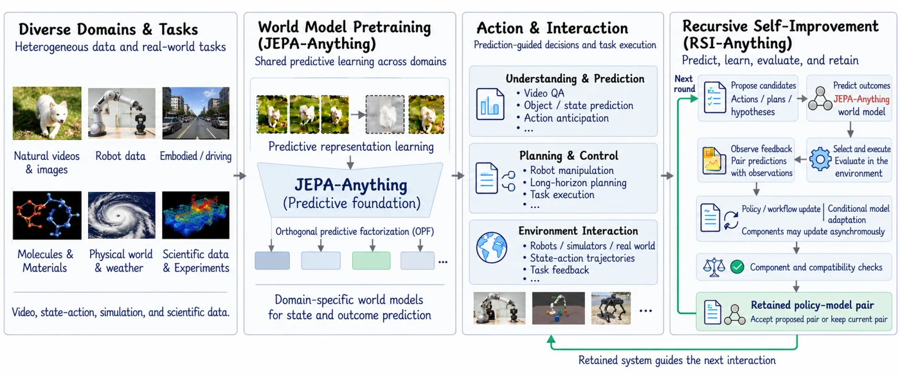

RSI-Anything: Unlocking Recursive Self-Improvement with World Models
A framework built on JEPA-Anything that uses predictive world models and interaction feedback to improve agents and workflows across code repair, GUI interaction, laboratory planning, reaction optimization, and immune science.